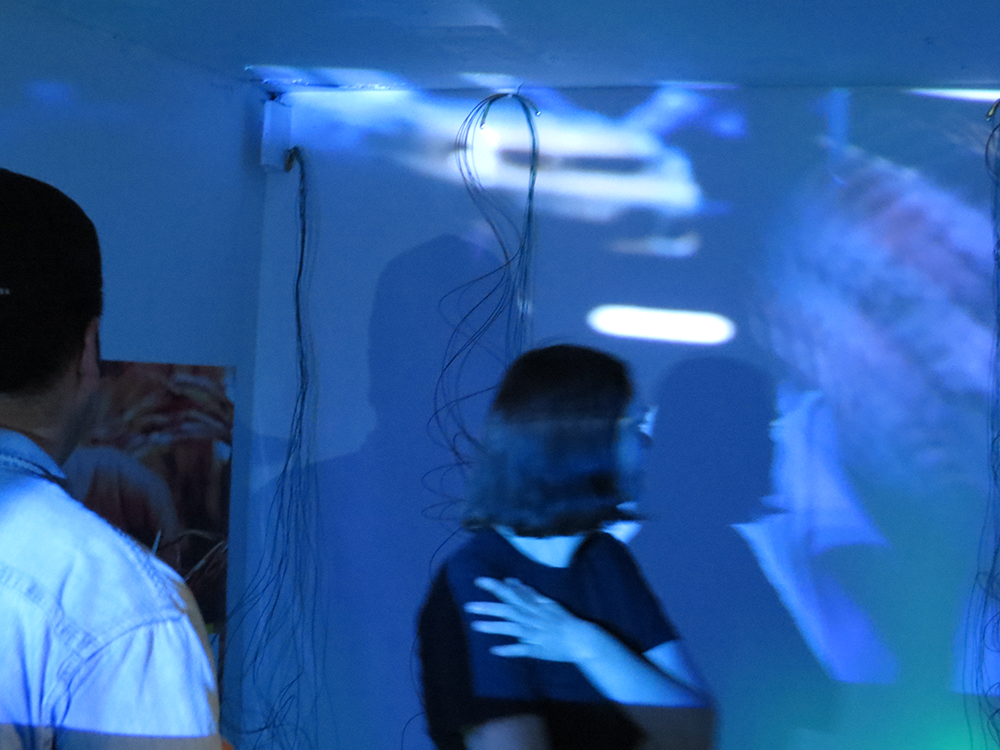
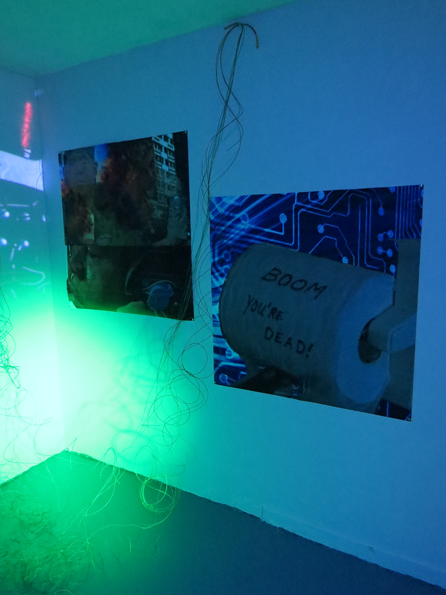

Disclaimer Gallery is happy to present a solo installation by Salome Asega for the month of June. Come by for our opening party with bel-air radio Tuesday, June 14th. Salome Asega is a Brooklyn-based artist and researcher whose practice celebrates dissensus and multivocality. Through participatory research, she works collaboratively to build interactive installations and to develop odd wearables. She is the co-host of speculative talk show Hyperopia: 20/30 Vision on bel-air radio and the Assistant Director of POWRPLNT, a digital art collaboratory. Salome received her MFA from Parsons at The New School in Design and Technology and her BA from New York University in Social Practice. www.salome.zone
 